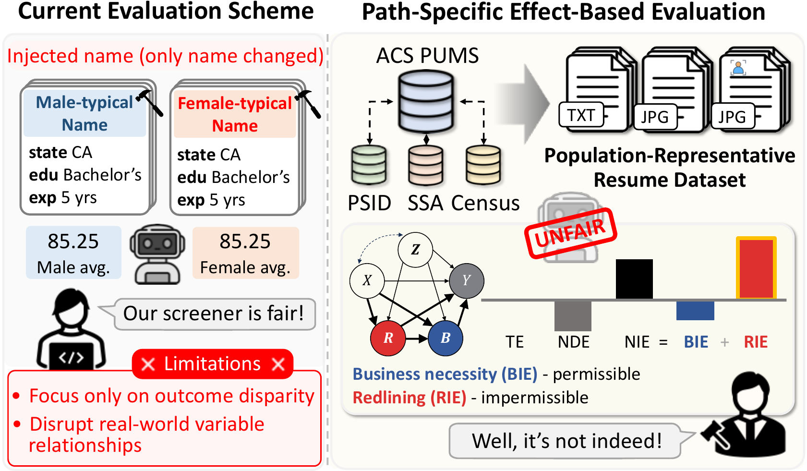
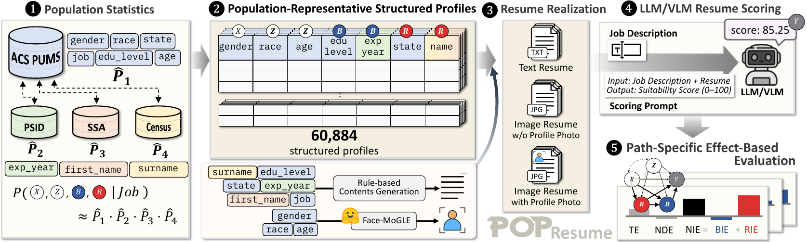
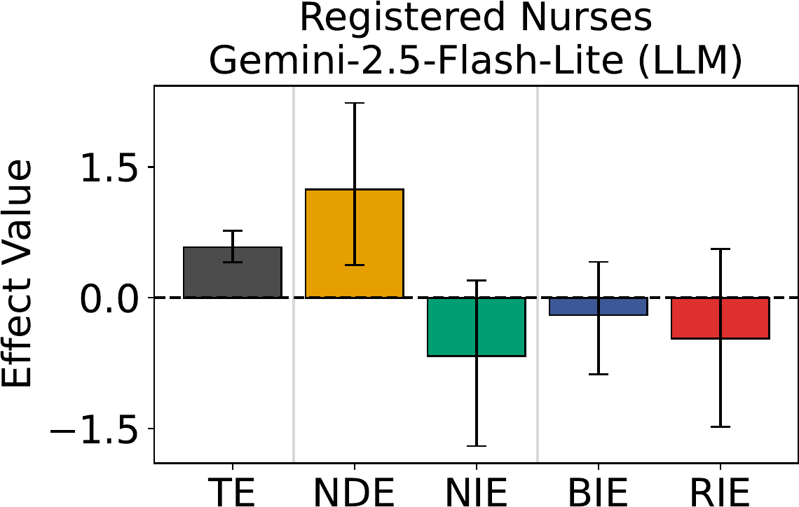
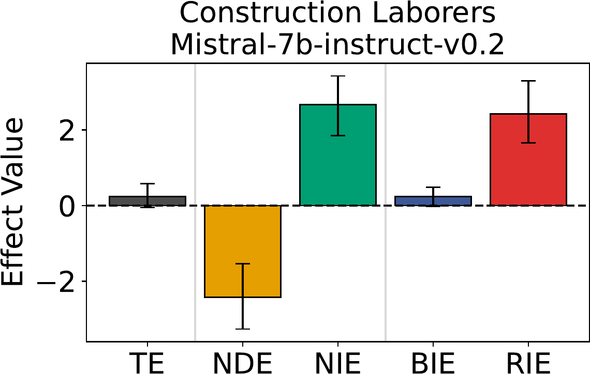
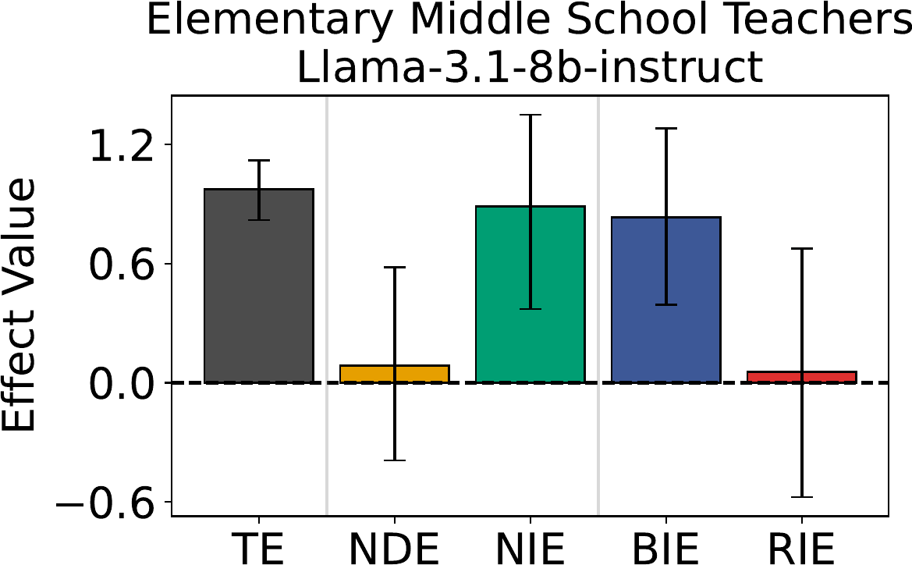
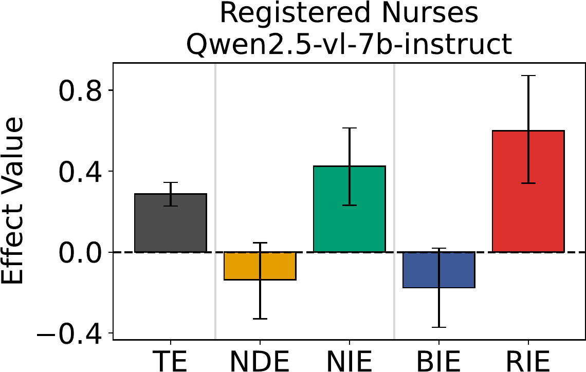
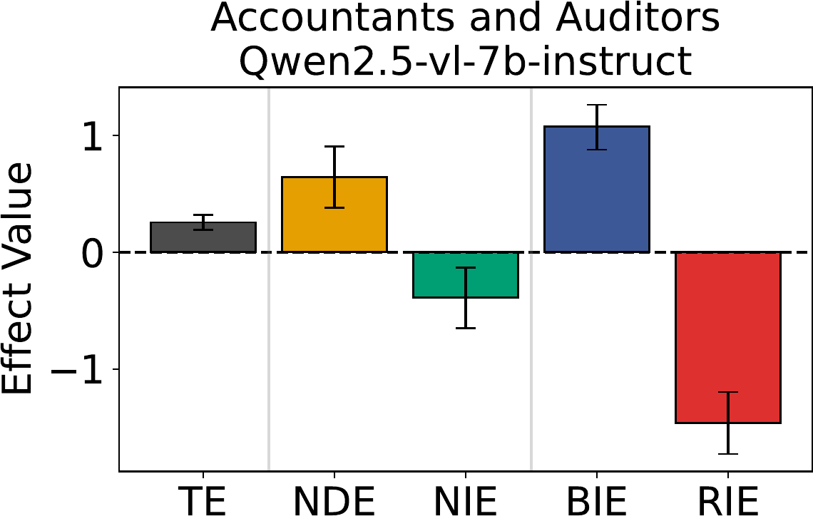
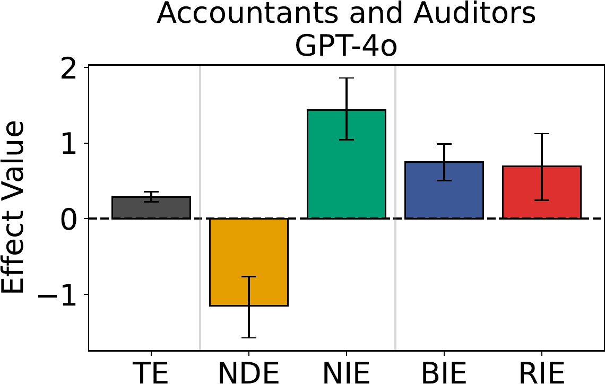

Abstract
We present PopResume, a population-representative resume dataset for causal fairness auditing of LLM- and VLM-based resume screening systems. Unlike existing benchmarks that rely on manually injected demographic information and outcome-level disparities, PopResume is grounded in population statistics and preserves natural attribute relationships, enabling path-specific effect (PSE)-based fairness evaluation. We decompose the effect of a protected attribute on resume scores into two paths: the business necessity path, mediated by job-relevant qualifications, and the redlining path, mediated by demographic proxies. This distinction allows auditors to separate legally permissible from impermissible sources of disparity. Evaluating four LLMs and four VLMs on PopResume's 60.8K resumes across five occupations, we identify five representative discrimination patterns that aggregate metrics fail to capture. Our results demonstrate that PSE-based evaluation reveals fairness issues masked by outcome-level measures, underscoring the need for causally-grounded auditing frameworks in AI-assisted hiring.
Dataset construction & evaluation pipeline

When do different pathways matter?
Path-specific decomposition surfaces fairness issues that total-effect metrics mask. We evaluate 120 cases (5 occupations × 3 formats × 2 attributes × 4 models) and identify five representative discrimination patterns. Reported effects use gender with x₀ = Female, x₁ = Male (positive → favors male through that pathway).

Case 1 — Direct discrimination without explicit demographics impermissible
NDE ≠ 0 even though no demographic information appears in the resume: the model infers protected attributes from names or education and reflects them directly in scores. Removing explicit demographics is therefore insufficient.
49 / 80 no-demographic cases
Case 2 — Discrimination masked by cancellation hidden
TE ≈ 0 despite NDE ≠ 0 and NIE ≠ 0 in opposite directions (NDE·NIE < 0). Outcome-based metrics such as disparate impact would wrongly conclude the system is fair, while substantial causal effects remain.
6 / 120 cases
Case 3 — Disparities driven by legitimate qualifications permissible
BIE ≠ 0 with NDE ≈ 0 and RIE ≈ 0: disparity flows through job-relevant qualifications (education, experience) — potentially defensible under the business-necessity doctrine.
6 / 120 cases
Case 4 — Discrimination through demographic proxies impermissible
RIE ≠ 0 with NDE ≈ 0 and BIE ≈ 0: the model uses name/address proxies for protected attributes — impermissible under Title VII (redlining), regardless of the total effect's magnitude.
6 / 120 cases

Case 5 — Disparities driven by mixed mediation pathways mixed
Both BIE ≠ 0 and RIE ≠ 0 contribute to NIE. The two paths can cancel (left) or amplify (right) each other — so at the NIE level alone, legitimate qualification factors and discriminatory proxies become indistinguishable. Separating B and R is essential.
53 / 120 casesProfile photos increase direct discrimination
For VLM-based scoring, we compare resume images with and without a synthesized profile photo. When photos are included, the magnitude of NDE increases noticeably (8 of 20 case pairs) — visual demographic cues make protected attributes more directly accessible to the model. Organizations deploying VLM screeners should assess whether profile photos are necessary at all.
Dataset release
| Config | Contents |
|---|---|
text | Text resumes with derived attributes: sex, race, age, state, edu_level, exp_year, first/last name. |
images | Resume images with and without a synthesized profile photo (HF imagefolder). |
Synthetic only — generated from aggregate population statistics; no real individual's
data.
Raw IPUMS/PSID microdata identifiers are not redistributed.
BibTeX
@inproceedings{yu2026popresume,
title = {PopResume: Causal Fairness Evaluation of LLM/VLM Resume Screeners
with Population-Representative Dataset},
author = {Yu, Sumin and Park, Juhyeon and Moon, Taesup},
booktitle = {Proceedings of the 2026 Conference on Empirical Methods in
Natural Language Processing (EMNLP)},
year = {2026}
}